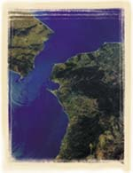
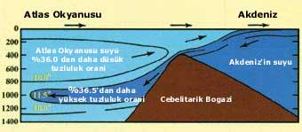

DENÝZLERÝN
BÝRBÝRÝNE KARIÞMAMASI
Denizlerin,
araþtýrmacýlar tarafýndan çok yakýn bir geçmiþte tespit edilen bir özelliði,
Kuran'ýn Rahman Suresi'nde þöyle bildirilir:
“Birbirleriyle kavuþmak üzere iki denizi salýverdi. Ýkisi arasýnda bir engel vardýr; birbirlerinin sýnýrýný geçmezler.„Birbirine açýlan fakat sularý kesinlikle birbiriyle karýþmayan denizlerin ayette bildirilen bu özelliði, okyanus bilimciler tarafýndan çok yakýn bir zaman önce keþfedilmiþtir. "Yüzey gerilimi" adý verilen fiziksel bir kuvvet nedeniyle, komþu denizlerin sularýnýn karýþmadýðý ortaya çýkmýþtýr. Denizlerin farklý yoðunluklarýndan kaynaklanan yüzey gerilimi, adeta bir duvar gibi sularýnýn birbirine karýþmasýný engeller.11 |
 |
Elbette
ki iþin ilginç yaný, insanlarýn, ne fizikten, ne yüzey geriliminden, ne
de okyanus biliminden haberdar olmadýklarý bir devirde bu gerçeðin Kuran'da
bildirilmiþ olmasýdýr.
|
 Akdeniz'de ve Atlas Okyanusu'nda büyük dalgalar, güçlü akýntýlar ve gelgitler vardýr. Akdeniz'in suyu, Cebelitarýk Boðazý'nda Atlas Okyanusu ile karþýlaþýr. Ama bu karþýlaþma sonucu kendi sýcaklýk, tuzluluk ve yoðunluk özellikleri deðiþmez. Çünkü iki deniz arasýnda görülmeyen bir sýnýr vardýr. |